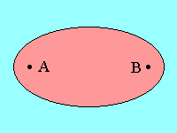
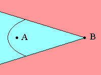
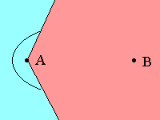
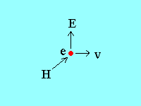
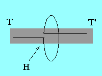

LECTURE NO. 17
THE MAGIC OF MIRRORS
TEC II
Copyright © Harold Aspden, 1998
INTRODUCTION
Professors will tell you that "In nature heat is never found to flow up a temperature gradient of its own accord". From this, they and the textbooks on which they rely advance to the statement of a law according to which it is impossible for any machine to abstract heat from the coldest body of its surroundings and convert this into useful work, surplus to that needed to power the machine. The law thus justified is known as "The Second Law of Thermodynamics".
If you are a student of physics or engineering you are thereby indoctrinated and become committed to the belief that if someone, in your later life, whether in academia or in industry, comes to you with a bright idea or proposition about designing a machine that does not keep within the bounds of that particular law, then you are justified in giving vent to your scorn and ridiculing that person for being ill-educated.
So it is that our world, in which we are so anxious to catch a glimpse of a ray of hope that we may one day inhabit a pollution-free environment, is left in darkness, thanks to the 'good' education that we physicists and engineers have received in our university years.
I am now too old to think that I can put right the damage done by all those professors, but I can suggest that any student who listens to such teaching in the future should pay close attention to the argument used. Now read again the opening paragraphs above and ask yourself two questions: "Where in nature does one ever see a 'machine', as such?", and: "What is the point of building a machine, said to be a heat engine, if all it does is to allow heat to flow 'of its own accord'?" Surely, the very fact that man has intervened by providing a machine which deploys heat energy in some way, is an intrusion upon that territory of something doing something of its own accord!
Search the whole spectrum of physics and ask yourself whether you see 'order' or chaos' in nature. Surely you can see both. There is 'order' in the behaviour of electrons in atoms. There is order in the way atoms fit together in a crystalline structure. There is order provided by the magnetic domain structure inside ferromagnetic materials. All that order is governed by energy finding its optimized state. Seemingly, however, there is disorder in the energy activity we refer to as 'heat', and those professors of yours will delight in introducing you to the mysterious word 'entropy'. They do not know what 'entropy' means, other than saying it is the quantity of heat as divided by its temperature and that it can only increase. That is because they have the conviction that heat can only 'go downhill' and degrade in quality, meaning that its temperature has to fall inexorably as the heat energy passes on into the oblivion of outer space.
But suppose there is, in the system we call 'space', something that can be said to be a 'machine'. Then your professors will smile at your suggestion and come back to that Second Law of Thermodynamics. The heat can only go 'downhill' in temperature and entropy can only increase!
It is here that I step in and refer to something of mine that was published in the science journal 'Nature', 1990h in these Web pages. In fact, I have already introduced this subject in the first chapter TEC I of the sequence of commentaries I am putting on the Web as my account of 'Thermodynamic Energy Conversion'. In this Lecture No. 17 I wish to delve into some simple physics, rather than technological detail, just to ease the path for those who are still under the spell of their professorial teachings.
The Magic of Mirrors
Imagine that a thin nylon cord supports two metal spheres, each at a different focus of a concave mirror. Now ask yourself whether the temperatures of those two metal spheres must be the same?
To answer this question refresh your memory of what you may have learnt in your physics lessons. I quote from a 1957 textbook on 'Geometrical and Physical Optics' by R.S. Longhurst:
Suppose there is a source of light inside a sphere then .... (by the analysis here presented .... the flux reflected from each part of the sphere is equally distributed over the other part, or the flux received by an element after reflection at other points is everywhere the same. For a given sphere it can therefore only depend upon the total flux radiated by the enclosed source.
In your lessons on heat radiation you also learn about black body radiation and how uniformity of temperature prevails within a spherical cavity so that inspection through a small aperture in the cavity allows you to perceive the nature of that 'black body radiation'. Indeed you are taught that the radiation is very similar to that of a perfect black body at the same temperature as prevails within that spherical cavity. The cavity, moreover, need not be of spherical form, given that equilibrium conditions will prevail anyway and the result of all this is enshrined in what is called The Law of Cavity Radiation.
So, when you come to answer the above question your instincts should be to say that both metal spheres must be at the same temperature.
Now consider the two metal spheres as being at the focal points of an ellipsoidal mirror which constitutes that radiation cavity, as depicted in Fig. 1.

FIG. 1
Here, if only by an argument based on symmetry, you can assure yourself that the two metal spheres will tend to remain at the same temperature. Now, however, ask yourself what happens if the sphere at A is cooled by some internal means. Will it then merely absorb heat from the cavity surface, whilst the metal sphere at B retains its equilibrium temperature as that prevailing at the cavity surface?
The answer to this is known from Pictet's experiment or that of Count Romford, which dates from 1800, as you may see mentioned in the 'Background of the Invention' section of my U.S. Patent No. 5,101,632. Metal sphere B will cool down to complement the cooling of metal sphere A.
Now, although I say the answer is known from such experiments, with regard to the details of such experiments, I only see reference to the use of a concave mirror, so we need to look now at what is shown in Figs. 2 and 3.

FIG. 2

FIG. 3
Here the mirror is not a complete ellipsoid but just a concave portion of such a form. We have asymmetry in the apparatus and, yes, we know from those experiments that, if one of A or B is at a temperature different from the equilibrium temperature of the environmental surroundings, so the other will adjust to a temperature that is also different from the ambient temperature. However, what I now ask is whether, without any predetermination of the temperature of A or B by some special heating or cooling means, A and B will adopt the same temperature under normal conditions of equilibrium?
You can answer this in two ways. You can declare that according to the Second Law of Thermodynamics the temperatures of A and B must be the same, owing to it being contrary to experience for 'heat to flow from a cooler body to a warmer body of its own accord'. It must do that if A and B are to adopt different temperatures, given that heat energy is conserved. Alternatively you could say that you do not know the answer to the question but that you surmise that, since in Fig. 2 the portion of the cavity housing surface radiating heat to sphere B is larger than that in Fig. 1 radiating heat to sphere A, it seems likely that B will get hotter than A. You can further argue that if the two spheres have the same size, then more heat will be radiated from A to B than is radiated from B to A. So B should become hotter than A.
You do this by discussing the role of the mirror in capturing radiation from B over a small solid angle of radiation, and reflecting it to A, whereas, as is evident from Fig. 3, the mirror captures a large solid angle of radiation from A and reflects it to B. Inevitably you should be in a quandary as to whether you can trust that Second Law of Thermodynamics or whether, in fact, if you build such a device and eliminate air convection you will actually witness A and B developing a temperature difference.
Think about it! Ask yourself what this means. I know myself that, if I can get heat to flow through a thermoelectric device from one metal heat sink to another, then I can generate electricity. However, if I can generate electricity by merely building a thermoelectric device combined with a mirror and without doing anything to feed in any other form of energy, then I have either worked a miracle, performed a feat of magic or, perhaps, found an alternative to imitating one of Mother Nature's more subtle energy regenerative processes.
This process does not in any way breach the First Law of Thermodynamics, namely the need to conserve energy, because all it does is to take heat energy from our ambient surroundings and convert it into electricity. Now, and I say this with emphasis, why do we persist in trying to solve our future energy problems by attempting to replicate the imaginary hot fusion processes occurring in the Sun when here we can see a possible way forward using the simple 'magic of mirrors'?
In fact, all this amounts to is the harnessing of Maxwell's Demon, except we do let the mirror perform the task effortlessly. We do not need a demon sitting at the toll gates where passage of heat energy is allowed or not allowed, according a selection of the particles that convey heat. Maxwell's hypothetical demon opens and shuts a gate, to admit and confine the more energetic particles in one heat chamber, whilst obstructing entry of the least energetic particles and allowing egress from the chamber by the least energetic particles. By the simple labour of opening and shutting a gate, heat is thereby transferred to that chamber to elevate its temperature. However, we use mirrors instead. Energy seeking entry to that chamber is direct to a mirror focus located at the point of entry through a small aperture, whereas energy coming the other way from within the chamber has to find its own way through the small aperture leading through that passage and so has some difficulty escaping, at least until its temperature raises sufficiently to give it the necessary impetus.
Practical Considerations
This sounds interesting, doesn't it, but is it practical? Well it helps if the source of radiation is not simply a black body surface at room temperature, but rather one at an elevated temperature. The practical aspect could well just be one of scale and a consideration of economic factors, weight and volume to power ratio as well as capital cost to power ratio.
If you think we might never be able to power an automobile by such a method then I will not argue with you on that point. After all, one hundred years ago there were those who could never see technology developing that could power the flight of a Boeing 747. Nor could they imagine the technology that we now see in the fabrication of electronics microstructure in the computer industry. All I can say is that my calculations, as summarized towards the end of that U.S. Patent No. 5,101,632 indicate the prospect of generating 15 kW in a structure the size of a cubic metre. One can, presumably, contemplate the development of automobiles using this new technology, given one hundred years of onward development!
In such research so much does depends upon how we convert that heat at the elevated temperature into useful work, as by generating electricity. However, I have allowed for that in those calculations and suggested a way forward. There is the question of whether our mirror engine is subject to the Carnot efficiency. In fact, it cannot depend upon the Carnot criteria, because we are not losing any energy. We have no exhaust gases that carry away the degraded heat from which our engine has extracted its power. However, if we use a conventional heat engine, such as a steam engine or hot air engine to convert the heat our mirrors have produced at an elevated temperature then, sadly, we suffer from the Carnot efficiency limitation. What is also sad about this is the fact that we could well be considering using a reverse heat engine to increase the temperature of ambient heat intake as a kind of pre-heat stage in our engine. That offers the advantages of the Carnot criteria as a gain factor of the heat pump process. If only we can convert heat into electricity with an efficiency well in esxcess of the Carnot efficiency, then we can work the necessary miracle!
The Magic of Magnetism
Physicists will smile at the above suggestion, thinking, as they do, in terms of photons and such like. They believe that the energy carried by radiation of light and heat is transported by those so-called 'photons' which travel at the speed of light. Photons, if they exist as something that really does travel at that high speed, really can give physicists reason for having a headache, if they avoid being blinded by mathematical symbols and try to make sense of this photon notion. There is, for example, something called the 'Langevin Paradox'. According to one expert on Einstein's Theory of Relativity, writing as recently as in the September 15 issue of Physics Letters, vol. 234A (1997) pp. 75-85, to get Einstein's theory to be consistent with photons as carriers of light energy, one needs to say that the photon has a finite mass. Now, Einstein's theory is sacrosanct, not to the engineer, but to the physicist, so the world of physics must be losing its grip on reality. Can we afford to wait until physicists put their house in order?
We all know that a particle travelling at the speed of light will acquire infinite mass, at least that is consistent with experiments on electrically charged particles that can be accelerated to speeds close to that of light. That was all known before Einstein tried to build on the fact as support for his theory. However, there is another fact that needs to be remembered, the fact that the Earth's rotation can be sensed by optical interference techniques using a rotating system of mirrors (The Sagnac Effect). This fact known for most of the 20th century, still has to be reconciled with Einstein's theory or the idea of photons as particles or both have to be rejected. Take note also that there is evidence that the west-east motion of our laboratories on body Earth can be sensed owing to the fact that it intrudes to upset the precision of measurements of the Michelson-Morley type. The latter is the famous experiment which disproved the notion that the aether had certain properties previously assumed. It did not disprove anything about the ability of the aether to store energy, it being a universal energy 'bank' in which we can deposit energy by magnetic induction and recover that energy on demand!
Surely therefore we need to reconsider the foundations on which physicists rely when they express opinions on fundamental energy issues. Mirrors can reflect light, meaning energy if light transports energy at the speed of light, but it may well be that all that is transported is the ripple we associate with an electromagnetic wave, a ripple of the sea of energy that is everywhere in space. Now, I can deflect a moving electron by using a magnetic field, without injecting energy into the magnet producing that field. I cannot deflect an electromagnetic wave by using a magnet, at least not sufficiently for it to have any practical consequence. I decline to comment on whether a magnet can affect the motion of a photon, for the simple reason that I can only see the 'photon' as an 'event' that marks an energy-cum-momentum transaction as between aether and matter and events can occur at points A and B without requiring all the energy involved in those transactions to make the journey between A and B at the speed of light.
Our Thermodynamic Energy Conversion project (TEC) involves us, not with photons, but with energy and temperature and our next task is to examine the physics of converting heat energy into electricity. We are aiming at something close to 100% conversion efficiency, with no Carnot factor to bother us. We cannot talk about photons, because photons do not have a 'temperature', even though they are deemed to represent a package of energy relating energy with Planck's constant, h, times the frequency assigned to the photon.
The Electron and Maxwell's Demon
Imagine that Maxwell demon sitting patiently at a point inside a block of metal. You are sitting outside. You connect that metal in an electrical circuit and you pass current through it. The demon sees electrons migrating past his viewing station as the current flow. Now we do not want our demon to exert himself by opening and closing a gate or shutter, so we have provided a magnet for him to sit upon. The magnet produces a field which acts on the electron and, as we all know from our basic physics education that electron will be deflected sideways. See Fig. 4.

FIG. 4
We can now, if we wish draw current from that metal at right angles to its normal flow path. The stronger the magnet and the greater the magnetic field H, the greater the EMF generated in the lateral direction, the electric field E being proportional to H and also to the velocity v of the electron e.
This process is known in physics as the Hall Effect. There is no conversion of heat into electricity. The energy you supply in getting the electrons to migrate at that velocity v is all deployed in developing that electric field E and powering the current we might draw from the resulting EMF. The magnet does no work. It merely sits there and forces those electrons to change direction. The Hall Effect and the Carnot criteria of thermodynamic engines have no ground in common so beware of becoming confused as we now extend our Fig. 4 deliberations into the realm of heat energy conversion.
We are only interested in heat and we want to equip our Maxwell demon with a whole assembly of magnets positioned along that electron flow path, having now in mind the fact that the flow of heat in metal is a flow of electrons! Our demon knows only one temperature, that where he sits, and he pays no attention to what physicists living outside that lump of metal might have to say about Carnot efficiency. That is something that depends upon the specific absolute values of two temperatures, whereas our demon knows that all that matters to him is the flow of heat energy carried past his viewing station and that merely depends upon a temperature gradient at his position.
So those electrons migrating past him as heat are, as before, deflected to set up that transverse electric field, but this time their energy is that of heat and the magnet puts order into things and takes energy from that heat to feed it into the orderly state of an electric field. In short, we have quite efficient conversion of heat into electricity, because what is not converted moves on to be processed by the demon's assistants further down the line, namely those other magnets.
If we take electricity as output in that lateral direction, so we have cooled the metal. That is what we require in our mirror engine system. Two metal heat sinks at different temperatures T and T' powered by mirror magic and linked by a metal path including our Maxwell demon, or rather his magnets. Let us just picture the flow path of electrons that make the lateral detour. This is illustrated in Fig. 5.

FIG. 5
When an electron flowing along the metal path is diverted laterally to flow around an external loop circuit which includes a load device (not shown) it returns on the opposite side of the metal to share the heat latent in the metal at that point of return and moves on in the forward direction conveying heat.
The electron does not need any extra power to re-enter the main path of the metal conductor. Indeed, what has been described is simply the conversion of heat into electricity, an energy conservation process, but one which, thanks to the magnet and the established flow direction of the heat, converts thermal chaos into electrical order. You may ask whether this can really work. More to the point, you may ask what happens to the electrons that reach the end of the main path and what is the source of those that come from the beginning of the main path. Now, there is a mystery! Frankly, I have yet to see this explained in a textbook and I wonder how I have missed it. My textbooks tell me how electrons carry the heat flow but they do not say quite how. One is left to wonder if it is a kind of 'knock-on' effect, owing to collisions between faster-moving electrons coming from the left and slower moving electrons coming from the right. In that case, since at any instant the flow rate of electrons to the left must equal the flow rate to the right, given no external closure circuit between the ends as heat sinks, there can be no net field E generated at all!
So one can say that heat is still carried by electrons in their 'knock-on' effects, thanks to a component of motion laterally directed with respect to the magnetic field, but that would mean no overall heat energy-to-electricity conversion. So, is the phenomenon described real? Well it is, because it is known as the Nernst Effect and those EMFs induced by heat flow, given the presence of a mutually orthogonal magnetic field, have been measured. They are particularly high in nickel. It follows, therefore, that our standard assumptions concerning the interaction of a magnetic field and an electron in motion must be erroneous.
Now, I have long suspected this, because I have wondered why it is that the magnetic field of a permanent magnet can penetrate through a block of copper without the numerous free electrons in motion within that copper reacting to screen such fields virtually in their entirety. My answer, one I adopted long ago, is the following:
When an electron in motion reacts to a magnetic field it is a quantum event, meaning that maybe it will and maybe it won't, this being determined by whichever affords the optimum response from an energy equilibrium viewpoint.
To picture what I mean here, note that an applied magnetic field is an 'action' and the response of the electron in that field is a 'reaction'. If the magnetic field increases then there is more reaction opposing that field, but the reaction must allow the field to assume the level at which it has stored the maximum amount of energy density in the reacting electrons. Remember that kinetic energy absorbs potential energy and, as potential energy minimizes, so kinetic energy increases. The energy density in a magnetic field H is proportional to H2. So, if we are to store such energy density in a system of reacting charge in motion, then we are referring to the component of motion that acts to set up the opposing field. The energy transferred to those charges, whether electrons or not, is a kind of thermal energy and it is pooled with the thermal state of the absorbing medium. It is dispersed as a result, apart from just that amount of energy that is polarized by the need to sustain the field reaction.
When I worked all this out, back in the mid 1950s, I discovered that what all this meant was that the magnetic field set up by an electron in orbital motion is really double the strength we have assigned to it in our standard electrical theory, but the optimum field reaction of the charge that retains that energy in readiness for its return when the electron's motion ceases will always set up a back-field halving that primary action. It all made good sense and it explained what is known as the gyromagnetic ratio, the anomalous factor-of-two observed, in the ratio of magnetic moment to angular momentum, when the magnetic polarization of pivotally-mounted ferromagnetic rods is reversed.
So what I am really saying here is that the Nernst Effect is evidence of the selective or quantized reaction of electrons when subject to a magnetic field. The Lorentz force law, which says how an electron or other charge in motion will react in a magnetic field, is not of universal applicability where the kinetic energy possessed by the reacting charges is so great as to exceed the magnetic energy density of the field in which they are present. There is also, it seems, a kind of pecking order, as between charges of different mass and even between charges of similar mass, such as electrons, if some have more energy than others.
Now I do not want to dwell on this theme here, especially as it is further complicated by that EMF produced by Nernst Effect having a different polarity coefficient for some metals versus others. So, I will hide behind the facts of experiment and say that the Nernst Effect is a real phenomenon, which is described in some of the better physics textbooks. I will go further than this, as we develop these 'TEC' web pages and will describe two different technological consequences, giving technical details of performance of the resulting heat to electricity conversion.
My concluding message here is that, if you are a physicist or student of physics and you are satisfied with what you have come to know about quantum electrodynamics and the application of the Lorentz force, sufficiently for you to think you can rely on that knowledge when judging the new energy proposals that I am introducing in these Web pages, then you will surely be missing opportunities for making a useful contribution to the energy technology of the future.
Otherwise, if you wish to learn more, then I invite you to progress to the next item TEC III.
Harold Aspden
haspden@iee.org